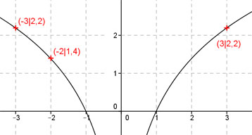

Aufgabe 98 Ergänzen Sie die Wertetabelle für den Graphen: y = ln x2 x -2 -3 oder 3 y 1,4 2,2 y = f(-2) = ln (-2)2 = 1,4 f(x) = 2,2 eingesetzt : 2,2 = ln x2 x2 = e2,2 = 2,7182,2 = 9 gerundet |√ x1 = -3 x2 = 3 